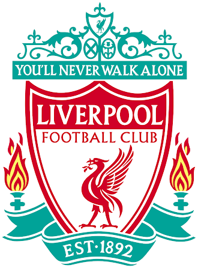

Liverpool FC
O Liverpool Football Club ou L.F.C. é um clube de futebol, com sede na cidade de Liverpool, Noroeste da Inglaterra. Fundado em 1892, ingressou na Football League no ano seguinte e desde então atua no Anfield Road. Seu uniforme, que originalmente adotava camisas vermelhas e calções brancos, é todo vermelho desde 1965.
Conheça mais sobre a nossa história